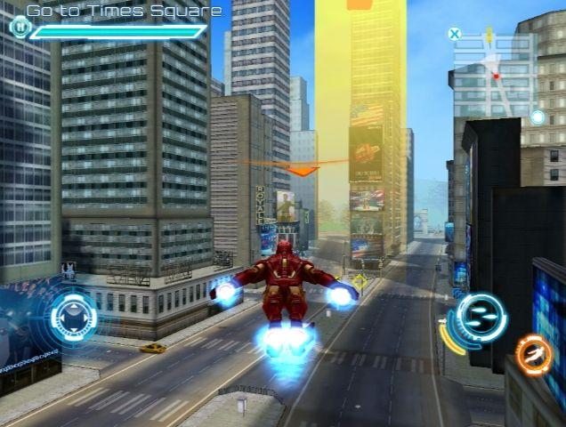
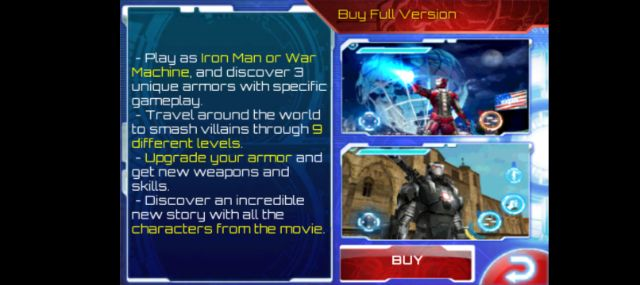
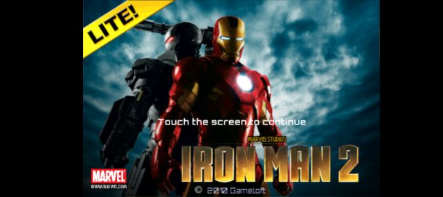
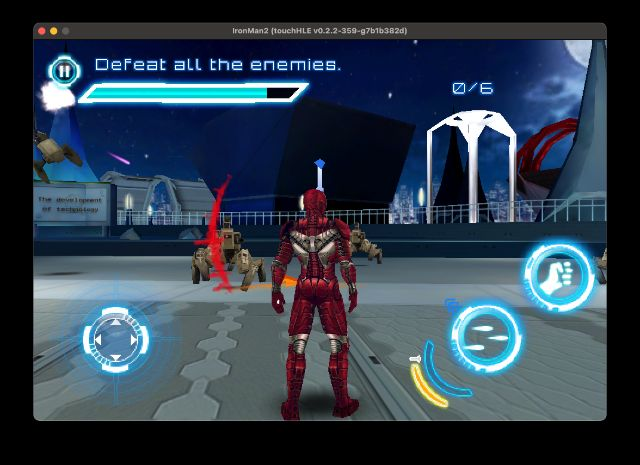

| App name | Iron Man 2 |
|---|---|
| Release year | 2010 |
| Developer/Publisher | Gameloft |
| First reported | |
| First reported by | @nighto |
| Version number | Display name | Bundle identifier | Minimum iOS version | Best rating | Last updated | First reported by | |
|---|---|---|---|---|---|---|---|
| 1.0.0 | IronMan2 | com.gameloft.IronMan2 | 2.2.1 | ⭐️⭐️⭐️⭐️⭐️ | @ciciplusplus | ||
| 1.0.0 | IronMan2Lite | com.gameloft.IronMan2Lite | 3.0 | ⭐️⭐️⭐️⭐️⭐️ | @yudr2372 | ||
| 1.0.0 | IronMan2 | com.gameloft.IronMan2iPad | 3.2 | ⭐️⭐️⭐️⭐️ | @HunterGM360 | ||
| 1.0.1 | IronMan2 | com.gameloft.IronMan2 | 2.2.1 | ⭐️⭐️⭐️ | @totvrey5 | ||
| 1.0.3 | IronMan2 | com.gameloft.IronMan2 | 3.0 | ⭐️ | @nighto |
| Version number | touchHLE version | Operating system | GPU | Scale hack supported? | Rating | Reported | Reported by | Remarks | Screenshot |
|---|---|---|---|---|---|---|---|---|---|
| 1.0.0 | v0.2.3-48-gd8cbe801 | Android 12 | PowerVR GE8320 | Didn't test | ⭐️⭐️⭐️⭐️ | @HunterGM360 | The iPad version works great. However, you need to use “--landscape-left (or right)”, otherwise it will crash. | View | |
| 1.0.0 | 0.2.3 | Android | Mali | Yes | ⭐️⭐️⭐️⭐️⭐️ | @witalobiel14-eng | |||
| 1.0.0 | 0.2.2-625-g3550209 | Android 12 | Mail-G57 | Yes | ⭐️⭐️⭐️⭐️⭐️ | @yudr2372 | The Game is work perfectly now no skip button >> crash and audio is fixed, even the Lite Version too | ||
| 1.0.0 | 0.2.2-579-g23f12cf | Android 12 | Mail-G57 | Didn't test | ⭐️⭐️⭐️⭐️⭐️ | @yudr2372 | The Game is work perfectly now no skip button >> crash and audio is fixed, even the Full Version too | View | |
| 1.0.1 | v0.2.2-380-g98e1938 | Android | Mali-G71 | Yes | ⭐️⭐️⭐️ | @totvrey5 | View | ||
| 1.0.0 | 0.2.2-359-g7b1b382 | Android 12 | Mail-G57 | Didn't test | ⭐️⭐️ | @yudr2372 | Game crash when you press Tap to Continue | View | |
| 1.0.0 | v0.2.2-359-g7b1b382d | macOS Sequoia 15.0.1 | Apple M1 GPU | Yes | ⭐️⭐️⭐️ | @ciciplusplus | Game is playable, but have 2 major issues: audio gets de-synced the more you plays and skipping cutscenes with '>>' button crashes the game. Restarting the game does reset the audio sync issue. | View | |
| 1.0.3 | v0.2.2-176-ge52f3fb | Ubuntu 22.04 | Intel UHD Graphics 620 | Didn't test | ⭐️ | @nighto | Crashes with: thread 'main' panicked at src/dyld.rs:604:9: Call to unimplemented function ___sprintf_chk |
| Rating | Description |
|---|---|
| ⭐️ | Completely broken: app crashes immediately without any user interaction. |
| ⭐️⭐️ | Only (part of) the main menu, intro or similar is working. |
| ⭐️⭐️⭐️ | Some of the main content of the app works, but with major issues. |
| ⭐️⭐️⭐️⭐️ | The main content of the app works (e.g. entire game is playable) with only small issues. |
| ⭐️⭐️⭐️⭐️⭐️ | Everything works. The app is fully usable. |



